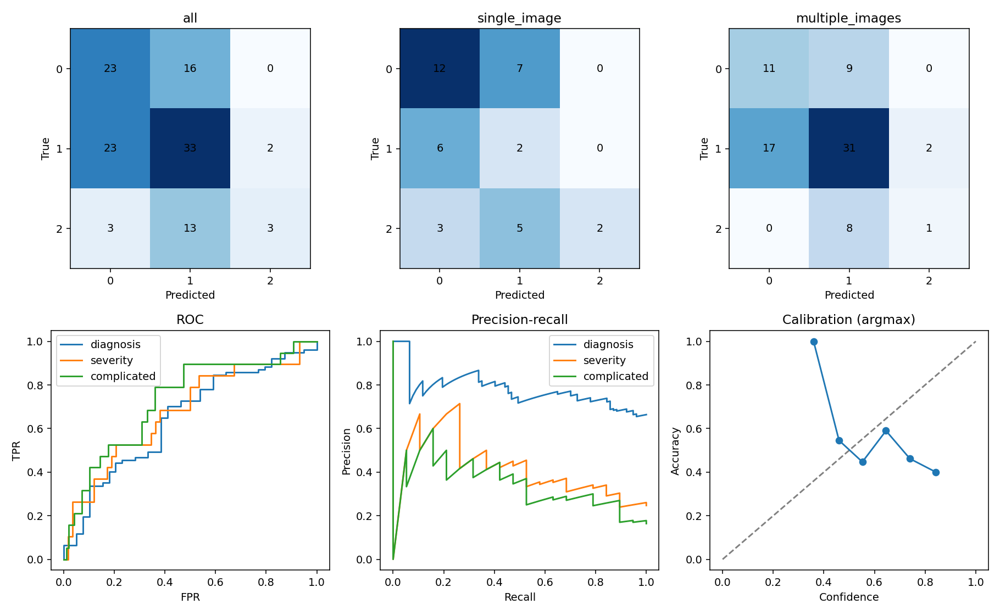

Patient-level evaluation of a separately trained model. Class accuracy = recall; OvR accuracy includes TN. Single/multiple groups use the original image count, including for the clinical model.
| mode | group | patients | accuracy | f1 | macro_f1 | precision | sensitivity | specificity | balanced_accuracy | weighted_f1 | mcc | cohen_kappa | auroc_macro_ovr | auprc_macro_average_precision | nll_three_classes | brier_three_classes | ece_top_label_argmax_10bins | argmax_accuracy | accuracy_wilson_95ci |
|---|---|---|---|---|---|---|---|---|---|---|---|---|---|---|---|---|---|---|---|
| image | all | 116 | 0.508621 | 0.440909 | 0.440909 | 0.533882 | 0.438868 | 0.713906 | 0.438868 | 0.491693 | 0.161699 | 0.158136 | 0.644879 | 0.462092 | 1.088376 | 0.634506 | 0.125215 | 0.508621 | [0.4188383757111454, 0.5978503396940331] |
| image | single_image | 37 | 0.432432 | 0.371717 | 0.371717 | 0.571429 | 0.360526 | 0.695402 | 0.360526 | 0.437510 | 0.077820 | 0.072792 | 0.557799 | 0.442759 | 1.345263 | 0.724036 | 0.246369 | 0.432432 | [0.28671719277157315, 0.5908581890983191] |
| image | multiple_images | 79 | 0.544304 | 0.419218 | 0.419218 | 0.457341 | 0.427037 | 0.699029 | 0.427037 | 0.535434 | 0.128066 | 0.125999 | 0.646512 | 0.447126 | 0.968062 | 0.592574 | 0.068472 | 0.544304 | [0.43498332933768713, 0.6495154240600666] |
| mode | group | class | class_index | support | predicted_support | tp | tn | fp | fn | precision | ppv | npv | sensitivity | specificity | f1 | fpr | fnr | balanced_accuracy | mcc | auroc | auprc_average_precision | recall | accuracy_within_class | one_vs_rest_accuracy | recall_wilson_95ci | wilson_95ci |
|---|---|---|---|---|---|---|---|---|---|---|---|---|---|---|---|---|---|---|---|---|---|---|---|---|---|---|
| image | all | no appendicitis | 0 | 39 | 49 | 23 | 51 | 26 | 16 | 0.469388 | 0.469388 | 0.761194 | 0.589744 | 0.662338 | 0.522727 | 0.337662 | 0.410256 | 0.626041 | 0.241092 | 0.648019 | 0.452535 | 0.589744 | 0.589744 | 0.637931 | [0.43418622882896973, 0.7292068999927483] | {'accuracy': [0.5473509245919844, 0.7196685218908739], 'sensitivity': [0.43418622882896973, 0.7292068999927483], 'specificity': [0.551246483089225, 0.7580007814294651], 'ppv': [0.3370350369317516, 0.606191360163381], 'npv': [0.6467423624446971, 0.8473186095150707]} |
| image | all | uncomplicated_appendicitis | 1 | 58 | 62 | 33 | 29 | 29 | 25 | 0.532258 | 0.532258 | 0.537037 | 0.568966 | 0.500000 | 0.550000 | 0.500000 | 0.431034 | 0.534483 | 0.069130 | 0.557372 | 0.570140 | 0.568966 | 0.568966 | 0.534483 | [0.4411810456996275, 0.6881820086745516] | {'accuracy': [0.44406486941836976, 0.6226899922023448], 'sensitivity': [0.4411810456996275, 0.6881820086745516], 'specificity': [0.3753827301422442, 0.6246172698577558], 'ppv': [0.40984032508164014, 0.6509116702666583], 'npv': [0.40605356021011496, 0.6631009888201891]} |
| image | all | complicated_appendicitis | 2 | 19 | 5 | 3 | 95 | 2 | 16 | 0.600000 | 0.600000 | 0.855856 | 0.157895 | 0.979381 | 0.250000 | 0.020619 | 0.842105 | 0.568638 | 0.250156 | 0.729246 | 0.363600 | 0.157895 | 0.157895 | 0.844828 | [0.05520471638534141, 0.3756547527032907] | {'accuracy': [0.7680146975991269, 0.8995339186080189], 'sensitivity': [0.05520471638534141, 0.3756547527032907], 'specificity': [0.9279124175258422, 0.9943273148977336], 'ppv': [0.23072428127601297, 0.8823792257673521], 'npv': [0.7786200797943343, 0.9092848006491072]} |
| image | single_image | no appendicitis | 0 | 19 | 21 | 12 | 9 | 9 | 7 | 0.571429 | 0.571429 | 0.562500 | 0.631579 | 0.500000 | 0.600000 | 0.500000 | 0.368421 | 0.565789 | 0.132749 | 0.584795 | 0.578891 | 0.631579 | 0.631579 | 0.567568 | [0.4103953316480307, 0.8085048725486492] | {'accuracy': [0.4091418109016808, 0.7132828072284269], 'sensitivity': [0.4103953316480307, 0.8085048725486492], 'specificity': [0.2903102150516998, 0.7096897849483002], 'ppv': [0.36546554369306716, 0.7553003107462404], 'npv': [0.33178556398811904, 0.7690134759450764]} |
| image | single_image | uncomplicated_appendicitis | 1 | 8 | 14 | 2 | 17 | 12 | 6 | 0.142857 | 0.142857 | 0.739130 | 0.250000 | 0.586207 | 0.181818 | 0.413793 | 0.750000 | 0.418103 | -0.139031 | 0.366379 | 0.186155 | 0.250000 | 0.250000 | 0.513514 | [0.07147921275210906, 0.5907245696898311] | {'accuracy': [0.35894896665618803, 0.6655359569698336], 'sensitivity': [0.07147921275210906, 0.5907245696898311], 'specificity': [0.4073783598787859, 0.7448682265867759], 'ppv': [0.04009392127146494, 0.3994137949697035], 'npv': [0.5352999516257463, 0.8745138395501365]} |
| image | single_image | complicated_appendicitis | 2 | 10 | 2 | 2 | 27 | 0 | 8 | 1.000000 | 1.000000 | 0.771429 | 0.200000 | 1.000000 | 0.333333 | 0.000000 | 0.800000 | 0.600000 | 0.392792 | 0.722222 | 0.563231 | 0.200000 | 0.200000 | 0.783784 | [0.056682151454375246, 0.5098375284633582] | {'accuracy': [0.6280485160803085, 0.886134880066144], 'sensitivity': [0.056682151454375246, 0.5098375284633582], 'specificity': [0.8754449702581331, 1.0], 'ppv': [0.3423802275066532, 1.0], 'npv': [0.6098268310800976, 0.8793412016580833]} |
| image | multiple_images | no appendicitis | 0 | 20 | 28 | 11 | 42 | 17 | 9 | 0.392857 | 0.392857 | 0.823529 | 0.550000 | 0.711864 | 0.458333 | 0.288136 | 0.450000 | 0.630932 | 0.238042 | 0.658475 | 0.370261 | 0.550000 | 0.550000 | 0.670886 | [0.3420853424503424, 0.7418021417443758] | {'accuracy': [0.5614657669235915, 0.7644579961820298], 'sensitivity': [0.3420853424503424, 0.7418021417443758], 'specificity': [0.5861915342706008, 0.811635003641777], 'ppv': [0.23565686541579597, 0.5759095570340281], 'npv': [0.6974585747569193, 0.9042759653087367]} |
| image | multiple_images | uncomplicated_appendicitis | 1 | 50 | 48 | 31 | 12 | 17 | 19 | 0.645833 | 0.645833 | 0.387097 | 0.620000 | 0.413793 | 0.632653 | 0.586207 | 0.380000 | 0.516897 | 0.033359 | 0.541379 | 0.670074 | 0.620000 | 0.620000 | 0.544304 | [0.4815044693099298, 0.7413721068980641] | {'accuracy': [0.43498332933768713, 0.6495154240600666], 'sensitivity': [0.4815044693099298, 0.7413721068980641], 'specificity': [0.255131773413224, 0.592621640121214], 'ppv': [0.504390570103431, 0.7656635587439515], 'npv': [0.23733101420380254, 0.5617589138033926]} |
| image | multiple_images | complicated_appendicitis | 2 | 9 | 3 | 1 | 68 | 2 | 8 | 0.333333 | 0.333333 | 0.894737 | 0.111111 | 0.971429 | 0.166667 | 0.028571 | 0.888889 | 0.541270 | 0.137204 | 0.739683 | 0.301042 | 0.111111 | 0.111111 | 0.873418 | [0.019890887638544935, 0.4349997055766559] | {'accuracy': [0.7824364133349648, 0.9297673653032448], 'sensitivity': [0.019890887638544935, 0.4349997055766559], 'specificity': [0.9016774388157609, 0.9921293880545587], 'ppv': [0.06149194472039632, 0.7923403991979523], 'npv': [0.805800536776795, 0.945688738171781]} |
| mode | group | task | status | patients | support_positive | support_negative | tp | tn | fp | fn | accuracy | precision | ppv | npv | sensitivity | recall | specificity | f1 | negative_class_precision | negative_class_recall | negative_class_f1 | macro_f1 | weighted_f1 | fpr | fnr | balanced_accuracy | mcc | auroc | auprc_average_precision | brier | log_loss | confusion_matrix | confusion_matrix_order | wilson_95ci | positive_class | negative_class | decision_rule | ranking_score |
|---|---|---|---|---|---|---|---|---|---|---|---|---|---|---|---|---|---|---|---|---|---|---|---|---|---|---|---|---|---|---|---|---|---|---|---|---|---|---|
| image | all | diagnosis | ok | 116 | 77 | 39 | 51 | 23 | 16 | 26 | 0.637931 | 0.761194 | 0.761194 | 0.469388 | 0.662338 | 0.662338 | 0.589744 | 0.708333 | 0.469388 | 0.589744 | 0.522727 | 0.615530 | 0.645931 | 0.410256 | 0.337662 | 0.626041 | 0.241092 | 0.648019 | 0.779359 | 0.235700 | 0.669559 | [[23, 16], [26, 51]] | [negative, positive] | {'accuracy': [0.5473509245919844, 0.7196685218908739], 'sensitivity': [0.551246483089225, 0.7580007814294651], 'specificity': [0.43418622882896973, 0.7292068999927483], 'ppv': [0.6467423624446971, 0.8473186095150707], 'npv': [0.3370350369317516, 0.606191360163381]} | appendicitis | no appendicitis | NaN | NaN |
| image | all | severity_direct_true_appendicitis | ok | 77 | 19 | 58 | 4 | 56 | 2 | 15 | 0.779221 | 0.666667 | 0.666667 | 0.788732 | 0.210526 | 0.210526 | 0.965517 | 0.320000 | 0.788732 | 0.965517 | 0.868217 | 0.594109 | 0.732943 | 0.034483 | 0.789474 | 0.588022 | 0.283143 | 0.678766 | 0.440464 | 0.184701 | 0.630946 | [[56, 2], [15, 4]] | [negative, positive] | {'accuracy': [0.6745693253831343, 0.8573359695890129], 'sensitivity': [0.0850767663291625, 0.43334278443814156], 'specificity': [0.8827085453568732, 0.9904920716688347], 'ppv': [0.2999933151383921, 0.9032285888942196], 'npv': [0.6802502178379416, 0.8675744858230089]} | complicated | uncomplicated | NaN | NaN |
| image | all | severity_after_gating_true_appendicitis | ok | 77 | 19 | 58 | 3 | 56 | 2 | 16 | 0.766234 | 0.600000 | 0.600000 | 0.777778 | 0.157895 | 0.157895 | 0.965517 | 0.250000 | 0.777778 | 0.965517 | 0.861538 | 0.555769 | 0.710639 | 0.034483 | 0.842105 | 0.561706 | 0.215922 | 0.700544 | 0.436561 | 0.201557 | 0.718088 | [[56, 2], [16, 3]] | [negative, positive] | {'accuracy': [0.6604617147211471, 0.846703799089505], 'sensitivity': [0.05520471638534141, 0.3756547527032907], 'specificity': [0.8827085453568732, 0.9904920716688347], 'ppv': [0.23072428127601297, 0.8823792257673521], 'npv': [0.6690904506199482, 0.858325564604242]} | complicated | uncomplicated | p >= 0.5 AND q >= 0.5 | p*q; decision is not threshold(p*q) |
| image | all | complicated_end_to_end_all_patients | ok | 116 | 19 | 97 | 3 | 95 | 2 | 16 | 0.844828 | 0.600000 | 0.600000 | 0.855856 | 0.157895 | 0.157895 | 0.979381 | 0.250000 | 0.855856 | 0.979381 | 0.913462 | 0.581731 | 0.804791 | 0.020619 | 0.842105 | 0.568638 | 0.250156 | 0.729246 | 0.363600 | 0.135917 | 0.492397 | [[95, 2], [16, 3]] | [negative, positive] | {'accuracy': [0.7680146975991269, 0.8995339186080189], 'sensitivity': [0.05520471638534141, 0.3756547527032907], 'specificity': [0.9279124175258422, 0.9943273148977336], 'ppv': [0.23072428127601297, 0.8823792257673521], 'npv': [0.7786200797943343, 0.9092848006491072]} | complicated | no or uncomplicated | p >= 0.5 AND q >= 0.5 | p*q; decision is not threshold(p*q) |
| image | single_image | diagnosis | ok | 37 | 18 | 19 | 9 | 12 | 7 | 9 | 0.567568 | 0.562500 | 0.562500 | 0.571429 | 0.500000 | 0.500000 | 0.631579 | 0.529412 | 0.571429 | 0.631579 | 0.600000 | 0.564706 | 0.565660 | 0.368421 | 0.500000 | 0.565789 | 0.132749 | 0.584795 | 0.592433 | 0.262042 | 0.734580 | [[12, 7], [9, 9]] | [negative, positive] | {'accuracy': [0.4091418109016808, 0.7132828072284269], 'sensitivity': [0.2903102150516998, 0.7096897849483002], 'specificity': [0.4103953316480307, 0.8085048725486492], 'ppv': [0.33178556398811904, 0.7690134759450764], 'npv': [0.36546554369306716, 0.7553003107462404]} | appendicitis | no appendicitis | NaN | NaN |
| image | single_image | severity_direct_true_appendicitis | ok | 18 | 10 | 8 | 3 | 8 | 0 | 7 | 0.611111 | 1.000000 | 1.000000 | 0.533333 | 0.300000 | 0.300000 | 1.000000 | 0.461538 | 0.533333 | 1.000000 | 0.695652 | 0.578595 | 0.565589 | 0.000000 | 0.700000 | 0.650000 | 0.400000 | 0.525000 | 0.697661 | 0.372030 | 1.255292 | [[8, 0], [7, 3]] | [negative, positive] | {'accuracy': [0.38619041602237913, 0.7969475342783637], 'sensitivity': [0.10779126740630102, 0.6032218525388546], 'specificity': [0.6755924351161198, 1.0], 'ppv': [0.4385029682449546, 1.0], 'npv': [0.30116980025498397, 0.7519046463426261]} | complicated | uncomplicated | NaN | NaN |
| image | single_image | severity_after_gating_true_appendicitis | ok | 18 | 10 | 8 | 2 | 8 | 0 | 8 | 0.555556 | 1.000000 | 1.000000 | 0.500000 | 0.200000 | 0.200000 | 1.000000 | 0.333333 | 0.500000 | 1.000000 | 0.666667 | 0.500000 | 0.481481 | 0.000000 | 0.800000 | 0.600000 | 0.316228 | 0.650000 | 0.748998 | 0.429715 | 1.543697 | [[8, 0], [8, 2]] | [negative, positive] | {'accuracy': [0.33716415642042785, 0.7544048187299436], 'sensitivity': [0.056682151454375246, 0.5098375284633582], 'specificity': [0.6755924351161198, 1.0], 'ppv': [0.3423802275066532, 1.0], 'npv': [0.27999563610326017, 0.7200043638967398]} | complicated | uncomplicated | p >= 0.5 AND q >= 0.5 | p*q; decision is not threshold(p*q) |
| image | single_image | complicated_end_to_end_all_patients | ok | 37 | 10 | 27 | 2 | 27 | 0 | 8 | 0.783784 | 1.000000 | 1.000000 | 0.771429 | 0.200000 | 0.200000 | 1.000000 | 0.333333 | 0.771429 | 1.000000 | 0.870968 | 0.602151 | 0.725661 | 0.000000 | 0.800000 | 0.600000 | 0.392792 | 0.722222 | 0.563231 | 0.213170 | 0.778589 | [[27, 0], [8, 2]] | [negative, positive] | {'accuracy': [0.6280485160803085, 0.886134880066144], 'sensitivity': [0.056682151454375246, 0.5098375284633582], 'specificity': [0.8754449702581331, 1.0], 'ppv': [0.3423802275066532, 1.0], 'npv': [0.6098268310800976, 0.8793412016580833]} | complicated | no or uncomplicated | p >= 0.5 AND q >= 0.5 | p*q; decision is not threshold(p*q) |
| image | multiple_images | diagnosis | ok | 79 | 59 | 20 | 42 | 11 | 9 | 17 | 0.670886 | 0.823529 | 0.823529 | 0.392857 | 0.711864 | 0.711864 | 0.550000 | 0.763636 | 0.392857 | 0.550000 | 0.458333 | 0.610985 | 0.686344 | 0.450000 | 0.288136 | 0.630932 | 0.238042 | 0.658475 | 0.854885 | 0.223362 | 0.639105 | [[11, 9], [17, 42]] | [negative, positive] | {'accuracy': [0.5614657669235915, 0.7644579961820298], 'sensitivity': [0.5861915342706008, 0.811635003641777], 'specificity': [0.3420853424503424, 0.7418021417443758], 'ppv': [0.6974585747569193, 0.9042759653087367], 'npv': [0.23565686541579597, 0.5759095570340281]} | appendicitis | no appendicitis | NaN | NaN |
| image | multiple_images | severity_direct_true_appendicitis | ok | 59 | 9 | 50 | 1 | 48 | 2 | 8 | 0.830508 | 0.333333 | 0.333333 | 0.857143 | 0.111111 | 0.111111 | 0.960000 | 0.166667 | 0.857143 | 0.960000 | 0.905660 | 0.536164 | 0.792933 | 0.040000 | 0.888889 | 0.535556 | 0.116383 | 0.691111 | 0.339083 | 0.127550 | 0.440467 | [[48, 2], [8, 1]] | [negative, positive] | {'accuracy': [0.71536779263512, 0.9052416065081895], 'sensitivity': [0.019890887638544935, 0.4349997055766559], 'specificity': [0.8653990931249298, 0.9889611156723801], 'ppv': [0.06149194472039632, 0.7923403991979523], 'npv': [0.7426407877129466, 0.9257921146307937]} | complicated | uncomplicated | NaN | NaN |
| image | multiple_images | severity_after_gating_true_appendicitis | ok | 59 | 9 | 50 | 1 | 48 | 2 | 8 | 0.830508 | 0.333333 | 0.333333 | 0.857143 | 0.111111 | 0.111111 | 0.960000 | 0.166667 | 0.857143 | 0.960000 | 0.905660 | 0.536164 | 0.792933 | 0.040000 | 0.888889 | 0.535556 | 0.116383 | 0.720000 | 0.338993 | 0.131949 | 0.466207 | [[48, 2], [8, 1]] | [negative, positive] | {'accuracy': [0.71536779263512, 0.9052416065081895], 'sensitivity': [0.019890887638544935, 0.4349997055766559], 'specificity': [0.8653990931249298, 0.9889611156723801], 'ppv': [0.06149194472039632, 0.7923403991979523], 'npv': [0.7426407877129466, 0.9257921146307937]} | complicated | uncomplicated | p >= 0.5 AND q >= 0.5 | p*q; decision is not threshold(p*q) |
| image | multiple_images | complicated_end_to_end_all_patients | ok | 79 | 9 | 70 | 1 | 68 | 2 | 8 | 0.873418 | 0.333333 | 0.333333 | 0.894737 | 0.111111 | 0.111111 | 0.971429 | 0.166667 | 0.894737 | 0.971429 | 0.931507 | 0.549087 | 0.844373 | 0.028571 | 0.888889 | 0.541270 | 0.137204 | 0.739683 | 0.301042 | 0.099735 | 0.358358 | [[68, 2], [8, 1]] | [negative, positive] | {'accuracy': [0.7824364133349648, 0.9297673653032448], 'sensitivity': [0.019890887638544935, 0.4349997055766559], 'specificity': [0.9016774388157609, 0.9921293880545587], 'ppv': [0.06149194472039632, 0.7923403991979523], 'npv': [0.805800536776795, 0.945688738171781]} | complicated | no or uncomplicated | p >= 0.5 AND q >= 0.5 | p*q; decision is not threshold(p*q) |
| mode | group | metric | lower | upper | valid_resamples |
|---|---|---|---|---|---|
| image | all | accuracy | 0.431034 | 0.594828 | 1000 |
| image | all | macro_f1 | 0.345980 | 0.541867 | 1000 |
| image | all | auroc_macro_ovr | 0.564133 | 0.725004 | 1000 |
| image | all | diagnosis_auroc | 0.545754 | 0.748277 | 1000 |
| image | all | severity_direct_auroc | 0.531670 | 0.815812 | 1000 |
| image | all | complicated_end_to_end_auroc | 0.596202 | 0.845944 | 1000 |
| image | all | complicated_recall | 0.000000 | 0.368421 | 1000 |
| image | single_image | accuracy | 0.297297 | 0.567568 | 1000 |
| image | single_image | macro_f1 | 0.211111 | 0.512465 | 1000 |
| image | single_image | auroc_macro_ovr | 0.419866 | 0.693140 | 1000 |
| image | single_image | diagnosis_auroc | 0.409211 | 0.751462 | 1000 |
| image | single_image | severity_direct_auroc | 0.250000 | 0.787500 | 1000 |
| image | single_image | complicated_end_to_end_auroc | 0.522130 | 0.885185 | 1000 |
| image | single_image | complicated_recall | 0.000000 | 0.402500 | 1000 |
| image | multiple_images | accuracy | 0.443038 | 0.645886 | 1000 |
| image | multiple_images | macro_f1 | 0.305539 | 0.551663 | 1000 |
| image | multiple_images | auroc_macro_ovr | 0.537338 | 0.748402 | 1000 |
| image | multiple_images | diagnosis_auroc | 0.515212 | 0.788136 | 1000 |
| image | multiple_images | severity_direct_auroc | 0.482222 | 0.873333 | 1000 |
| image | multiple_images | complicated_end_to_end_auroc | 0.557103 | 0.901587 | 1000 |
| image | multiple_images | complicated_recall | 0.000000 | 0.333333 | 1000 |
